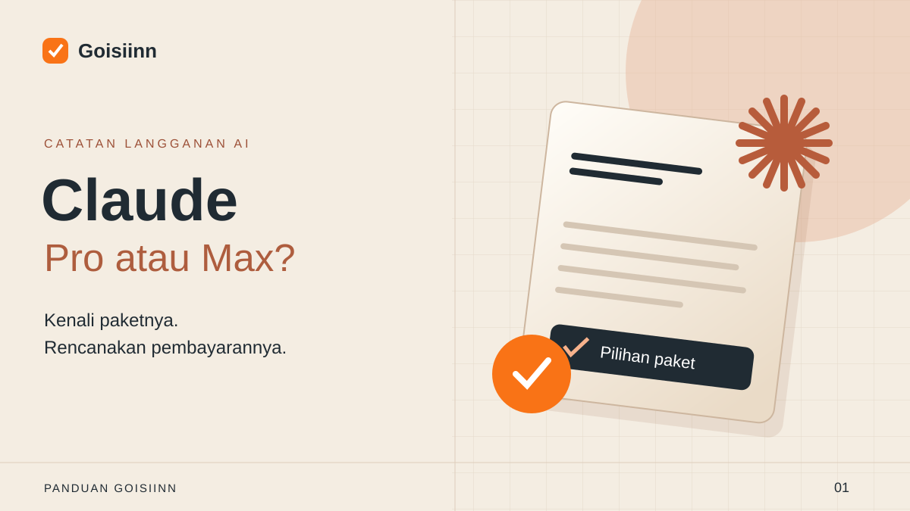
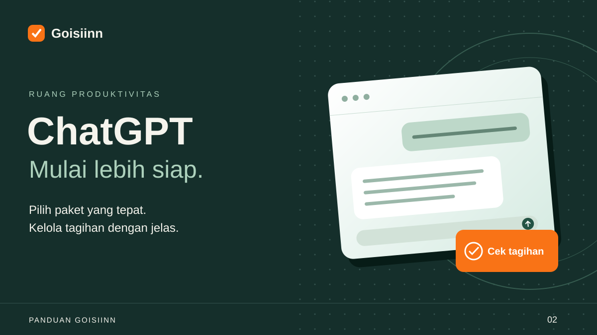
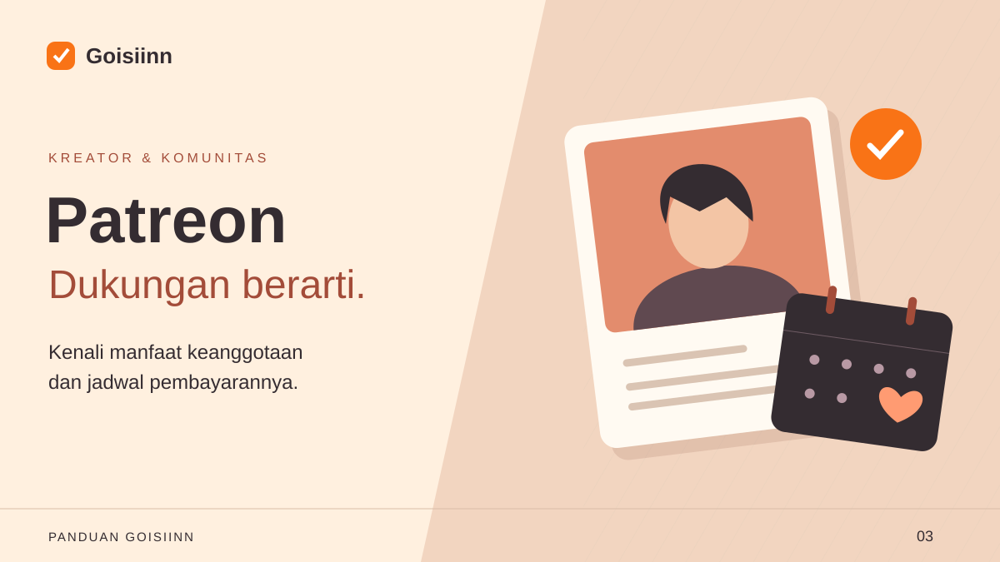
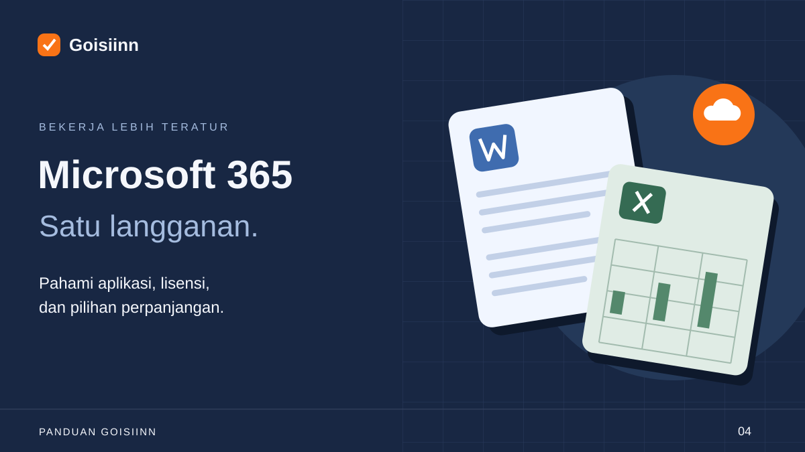
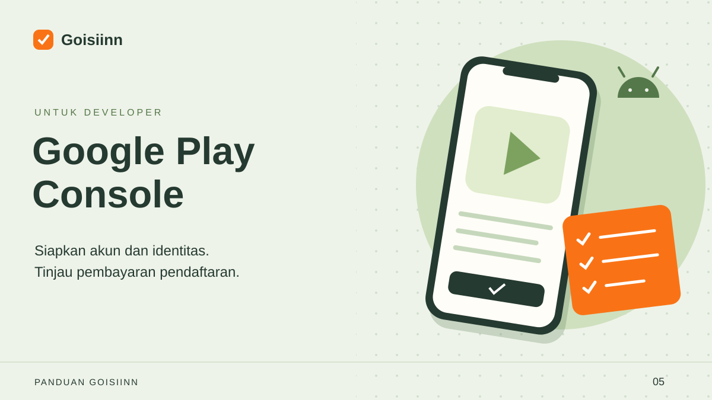
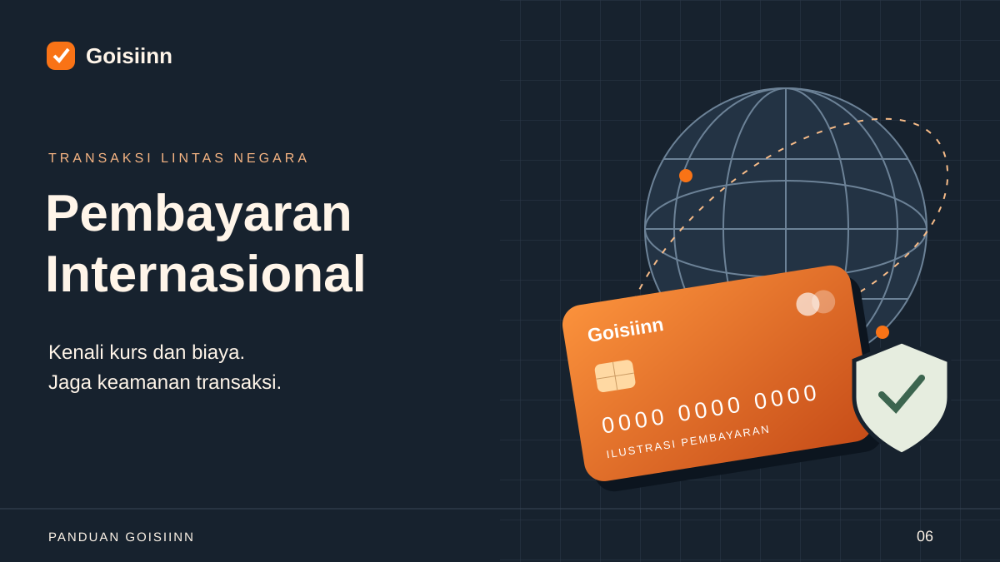

Claude Pro dan Max: Persiapan Sebelum Berlangganan
Kenali pilihan paket Claude, periksa metode pembayaran yang tersedia, dan pahami perpanjangan tagihan sebelum berlangganan.
Baca lebih lanjutPelajari pilihan paket, persiapan pembayaran, dan pengelolaan tagihan untuk Claude, ChatGPT, Patreon, Microsoft 365, serta Google Play Console sebelum bertransaksi.
Pilih Panduan Pembayaran
Kenali pilihan paket Claude, periksa metode pembayaran yang tersedia, dan pahami perpanjangan tagihan sebelum berlangganan.
Baca lebih lanjut
Pelajari cara memilih paket ChatGPT sesuai kebutuhan, meninjau rincian checkout, dan mengelola langganan melalui kanal pembelian.
Baca lebih lanjut
Periksa manfaat keanggotaan kreator, jadwal penagihan, dan total pembayaran Patreon sebelum memberikan dukungan berlangganan.
Baca lebih lanjut
Bandingkan cakupan aplikasi dan pengguna Microsoft 365, lalu periksa periode langganan serta pengaturan perpanjangan sebelum membeli.
Baca lebih lanjut
Siapkan identitas developer, pilih jenis akun yang sesuai, dan tinjau persyaratan pembayaran serta verifikasi Google Play Console.
Baca lebih lanjut
Pahami mata uang, biaya konversi, keamanan kartu, dan rincian jasa pembayaran sebelum bertransaksi di layanan luar negeri.
Baca lebih lanjutMasuk melalui situs atau aplikasi resmi Claude, lalu bandingkan paket Pro dan Max berdasarkan fitur serta batas penggunaan yang tercantum. Pastikan layanan dan metode pembayaran tersedia untuk negara akun Anda.
Sebelum menyetujui pembayaran, periksa periode langganan, mata uang, pajak, dan total tagihan di checkout. Jika kartu ditolak, cek dukungan transaksi online internasional dengan penerbit kartu dan jangan mengulang transaksi tanpa memeriksa statusnya.
Setelah pembayaran, simpan bukti transaksi dan periksa status paket di akun. Tinjau tanggal perpanjangan serta cara pembatalan melalui kanal tempat Anda berlangganan.
Buka situs atau aplikasi resmi ChatGPT dan pastikan akun yang digunakan sudah benar. Bandingkan fitur serta batas penggunaan paket yang ditawarkan sebelum memutuskan apakah perlu berlangganan.
Periksa periode tagihan, total pembayaran, dan metode yang tersedia pada checkout. Langganan ChatGPT dan penggunaan API ditagihkan secara terpisah, jadi pastikan produk yang dibeli sesuai kebutuhan.
Simpan bukti pembayaran dan kelola perpanjangan atau pembatalan melalui kanal pembelian, baik web maupun toko aplikasi. Hindari membeli langganan ganda sebelum memeriksa status langganan yang sudah ada.
Buka halaman resmi kreator di Patreon, lalu baca manfaat setiap tingkat keanggotaan. Perhatikan konten yang termasuk, ketentuan akses, dan apakah dukungan yang dipilih bersifat berulang.
Jadwal penagihan dapat berbeda sesuai pengaturan kreator dan kanal pembelian. Periksa tanggal tagihan berikutnya, mata uang, pajak, serta total pada checkout sebelum mengonfirmasi pembayaran.
Setelah bergabung, periksa status keanggotaan dan simpan bukti transaksi. Jika ingin berhenti atau mengganti tingkat dukungan, baca dampaknya terhadap akses konten dan tagihan berikutnya sebelum menyimpan perubahan.
Bandingkan paket Microsoft 365 berdasarkan jumlah pengguna, aplikasi yang disertakan, penyimpanan, dan kebutuhan pribadi atau bisnis. Periksa dukungan perangkat serta ketentuan lisensi pada halaman resmi paket.
Pastikan akun Microsoft penerima langganan sudah benar, lalu tinjau periode pembayaran dan total checkout. Jika membeli melalui penjual lain, periksa reputasi penjual serta kesesuaian wilayah dan jenis lisensi sebelum membayar.
Setelah pembelian, cek status langganan di akun atau kanal pembelian. Tinjau pengaturan penagihan berulang dan tanggal berakhir agar keputusan perpanjangan dapat dibuat sebelum tagihan berikutnya.
Gunakan akun Google yang akan mengelola aplikasi, lalu pilih jenis akun developer pribadi atau organisasi sesuai kondisi Anda. Siapkan identitas dan dokumen yang diminta dalam alur pendaftaran resmi.
Periksa biaya pendaftaran serta metode pembayaran yang ditampilkan Google Play Console sebelum membayar. Pastikan data penagihan akurat, lalu simpan bukti transaksi dan periksa status pendaftaran.
Pembayaran tidak menggantikan verifikasi identitas, persyaratan pengujian, atau peninjauan aplikasi. Ikuti persyaratan yang tampil pada akun dan dokumentasi Google sebelum mengajukan aplikasi untuk diterbitkan.
Pastikan merchant menerima jenis kartu Anda dan kartu mendukung transaksi online internasional. Periksa mata uang checkout, kemungkinan biaya konversi dari penerbit kartu, serta apakah pembayaran dilakukan sekali atau berulang.
Gunakan halaman pembayaran resmi dan jangan membagikan PIN, OTP, atau foto kartu melalui chat. Jika memakai jasa pembayaran, minta rincian total biaya, cakupan bantuan, dan ketentuan pembatalan atau pengembalian dana sebelum menyetujui transaksi.
Simpan bukti pembayaran dan cocokkan dengan status pesanan serta mutasi kartu. Jika transaksi tertunda atau ditolak, periksa statusnya dengan merchant atau penerbit kartu sebelum mencoba lagi untuk menghindari pembayaran ganda.